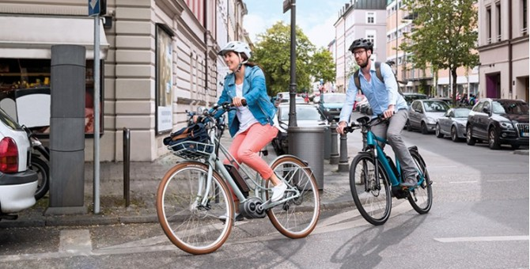

Accueil
Réserver un vélo
Contact
Fonctionnement de l'application
1 / 3
2 / 3

3 / 3
❮
❯
pause
Nom de la station:
Status de la station:
Adresse de la station:
Nombre de vélos disponible:
Nombre de places total:
Entrer votre nom:
Entrer votre prénom